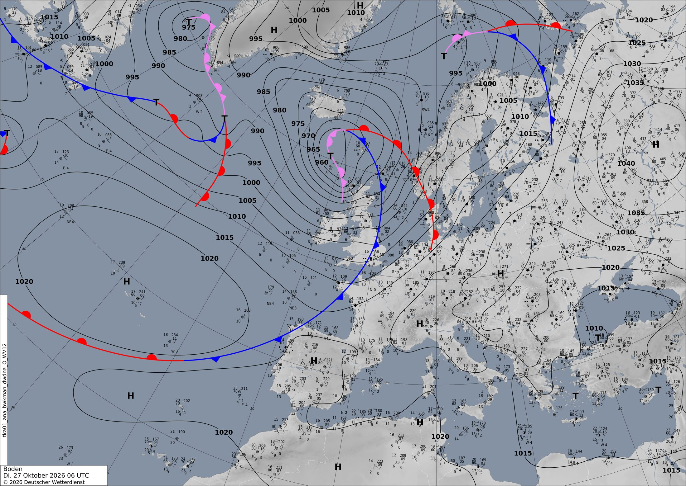

Un frente frío refresca la Península y una DANA riega Grecia
Hoy un frente frío cruza el norte peninsular y detrás llega un anticiclón con aire más fresco y noches frías. Mientras, una bolsa de aire frío en altura se queda atascada sobre Grecia y por el Atlántico se acerca una nueva borrasca.
Europa y el Atlántico
El protagonista del Atlántico norte es una borrasca muy profunda, de unos 955 hPa, situada hoy a las 00 UTC al sur de Islandia. Sus isobaras están muy apretadas, y eso significa viento fuerte en el mar entre Islandia, Irlanda y Escocia. Por encima, la corriente en chorro cruza Irlanda a unos 247 km/h. Mira aquí.
De esa borrasca cuelga un frente frío larguísimo. En la carta del DWD de las 06 UTC aparece en azul. Baja desde el mar del Norte, pasa por el canal de la Mancha y llega hasta el oeste de Galicia. En el satélite es esa banda de nubes estrecha y curvada que desciende por el Atlántico (fíjate en la banda nubosa). Hoy el frente barre el norte peninsular y deja detrás aire más fresco.
Mañana la borrasca se retira al este de Islandia y el escenario cambia. Un anticiclón de unos 1028 hPa se instala sobre el golfo de Vizcaya. El jueves se traslada a Alemania, con unos 1030 hPa. Es una muralla de altas presiones que aparta a las borrascas de Europa central.
En el otro extremo del Mediterráneo pasa algo muy distinto. Una bolsa de aire frío en altura se descuelga sobre los Balcanes y mañana queda cerrada al oeste de Grecia: es una DANA. Bajo ella se forma una borrasca pequeña en el sur del Egeo, y el modelo calcula lluvias fuertes: hasta 68 mm en 12 h sobre Grecia y más de 80 mm cerca de Chipre el jueves (mira aquí). Como va suelta, la DANA avanza despacio hacia Chipre y Turquía.
La tercera pieza llega por el oeste. Mañana nace una nueva borrasca en mitad del Atlántico, de unos 984 hPa, y el jueves se acerca a las Azores ya más débil. Para el viernes 30, el modelo la deshace en varias bajas poco profundas al oeste de la Península y al norte de Canarias, con una banda de lluvia intensa en alta mar. Al mismo tiempo, el chorro se refuerza al oeste de Irlanda hasta unos 279 km/h y una vaguada profunda se mete en el Atlántico (mira aquí). A 72 horas, la posición exacta de esas bajas todavía puede cambiar bastante.
En península ibérica y Baleares
Hoy el frente frío cruza el norte. Entre las 00 y las 12 UTC el modelo deja hasta 13 mm en 12 h. Lo más probable es que caigan en Galicia y el Cantábrico, que son las primeras zonas a las que llega el frente. Más al sur el día sigue siendo templado, con máximas cercanas a 27–28 °C en los puntos más cálidos.
Detrás del frente entra una masa de aire más fresca. A 850 hPa (unos 1500 m), la temperatura media de la región baja de 14,5 °C esta medianoche a unos 11 °C mañana. En el norte se queda en solo 1–2 °C (mira aquí).
Mañana y el jueves manda el anticiclón de Vizcaya. Bajo él el aire desciende, así que habrá cielos más despejados, poco viento y noches frías. El jueves de madrugada el modelo marca unos 1 °C a 2 m en algún punto del interior. Con noches así de largas y aire en calma, no sería raro que se formen nieblas en los valles.
Aun así, no todo será seco. El modelo prevé chubascos aislados, de hasta 7–9 mm en 12 h, entre mañana y el jueves. También indica CAPE de hasta unos 1000 J/kg, y casi 1200 J/kg el viernes de madrugada. Eso es energía suficiente para alguna tormenta suelta. Para saber dónde, comprueba la capa de CAPE. Lo habitual en otoño es que esté sobre el Mediterráneo, que todavía conserva calor.
El viento no será protagonista. Lo más fuerte es hoy, con unos 52 km/h ligados al frente. El viernes, las bajas atlánticas podrían traer más nubes y alguna lluvia al oeste, pero a ese plazo es una tendencia y no una certeza.
Lección del día: DANA (depresión aislada en niveles altos)
Vamos a ver cómo nace una DANA con el caso de Grecia.
- Abre el mapa de 500 hPa de hoy a las 00 UTC (mira aquí). Sobre los Balcanes, las líneas forman una U que apunta al sur. Es una vaguada que todavía está unida a la circulación general.
- Avanza a +24 h (mira aquí). Ahora las líneas se cierran en círculos al oeste de Grecia, con un mínimo de unos 549 dam. La bolsa fría se ha «descolgado» del flujo del oeste: eso ya es una DANA.
- Añade la precipitación a +48 h (mira aquí). Las lluvias fuertes se reparten alrededor de la DANA, sobre Grecia y cerca de Chipre, donde el aire húmedo del mar se ve obligado a subir.
- Avanza a +72 h. La DANA sigue ahí, ahora cerca de Chipre. Como no la arrastra el chorro, se mueve despacio, y por eso puede dejar lluvia varios días en la misma zona.
Ponte a prueba
3 preguntas sobre el tiempo de hoy. Puedes mirar el mapa antes de contestar.
Mañana, sobre Grecia, ¿qué convierte esa bolsa de aire frío en una DANA?
¿Por qué mañana y el jueves llueve tan poco en la península ibérica?
Tras el frente, un anticiclón de unos 1028 hPa se sitúa sobre Vizcaya. Bajo él el aire desciende y eso frena la formación de nubes. Mira aquí y repasa la ficha del anticiclón.
Hoy a las 00 UTC, ¿dónde soplará más fuerte el viento en superficie?
Cuanto más juntas están las isobaras, más fuerte sopla el viento, y alrededor de la borrasca de 955 hPa están muy apretadas. Mira aquí y repasa la ficha por qué sopla el viento.
La carta oficial
Análisis de superficie del servicio meteorológico alemán (DWD) válido el 27/10/2026 a las 06 UTC, dibujado por meteorólogos a partir de observaciones. Aquí sí hay frentes: azul con triángulos, frío; rojo con semicírculos, cálido; morado, ocluido. Las borrascas son T y los anticiclones H. Cómo leer esta carta.
